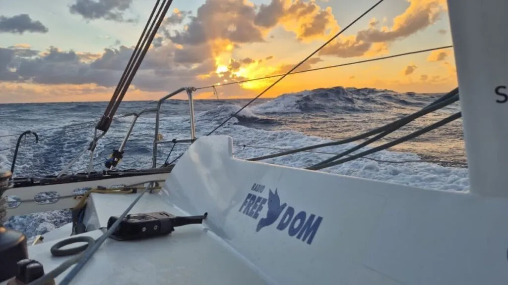

À la une
Piton de la Fournaise : le volcan en alerte, les autorités mobilisées
Les services de l'Observatoire Volcanologique du Piton de la Fournaise (OVPF) signalent une intensification des tremors sismiques depuis ce matin. Les équipes de la Préfecture restent en état d'alerte renforcée.